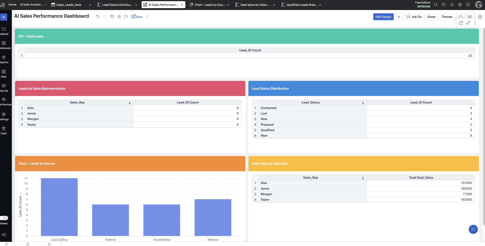
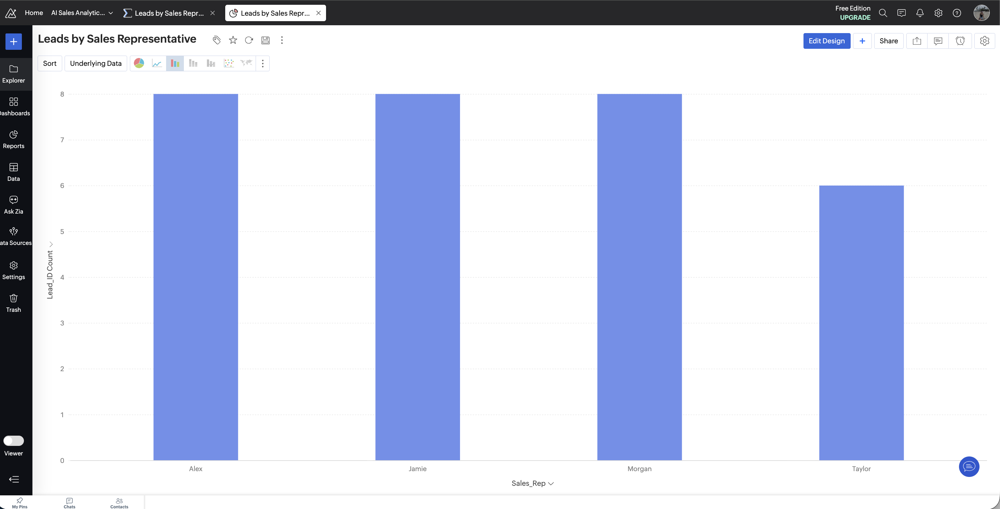
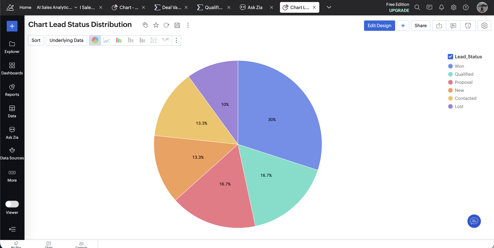
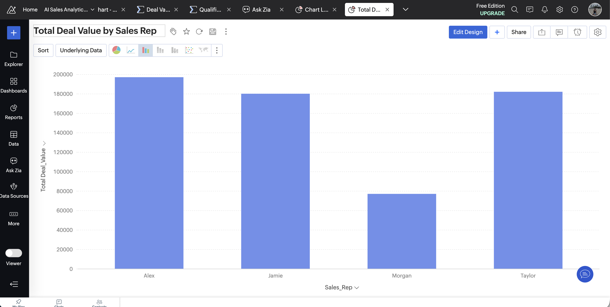
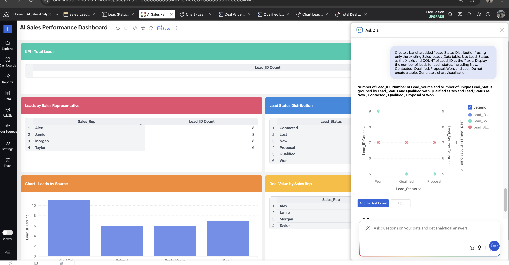

Business Analytics
AI-Assisted Reporting
Sales Performance
AI Business Reporting & Analytics Dashboard
A business reporting and analytics dashboard developed as part of my part-time work. This project
focuses on organizing sales and lead data into visual reports to support business performance
monitoring and decision-making.
Using Zoho Analytics and Ask Zia, I worked on presenting lead distribution, sales representative
performance, deal values, and AI-assisted analysis in a centralized dashboard.
Business Problem:
Sales information can be difficult to interpret when data is spread across tables and individual
reports. A centralized dashboard helps users review important performance indicators and identify
patterns more easily.
Project Objectives:
- Centralize important sales and lead reports
- Visualize leads by sales representative
- Review lead status distribution
- Compare deal values across sales representatives
- Explore AI-assisted insights using Ask Zia
Key Features:
- AI Sales Performance Dashboard
- Leads by Sales Representative report
- Lead Status Distribution report
- Deal Value by Sales Representative report
- Ask Zia analysis for natural-language data exploration
Tools Used:
Zoho Analytics, Ask Zia, sales and lead datasets, reports, charts, and dashboard configuration.
My Contribution:
- Configured sales and lead reports
- Organized report outputs for dashboard presentation
- Worked on visualizing lead and deal performance
- Tested AI-assisted questions using Ask Zia
- Reviewed report outputs and dashboard functionality
Confidentiality Notice:
This project was developed as part of my part-time work. To protect customer and business
confidentiality, the portfolio screenshots use fictional sample data and do not disclose actual
customer records or identifying information. Certain implementation details have been omitted for
confidentiality. The screenshots are provided for demonstration purposes only.
Project Screenshots





Portfolio case study demonstrating sales reporting, dashboard development, data visualization,
and AI-assisted analytics.